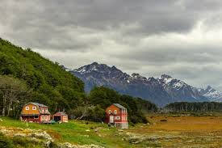

La Patagonia es una región geográfica, histórica y cultural ubicada en el extremo sur del Cono Sur de América. Políticamente comprende territorios que fueron colonizados por Argentina (Patagonia argentina) y Chile (Patagonia chilena) a partir de mediados del siglo XIX